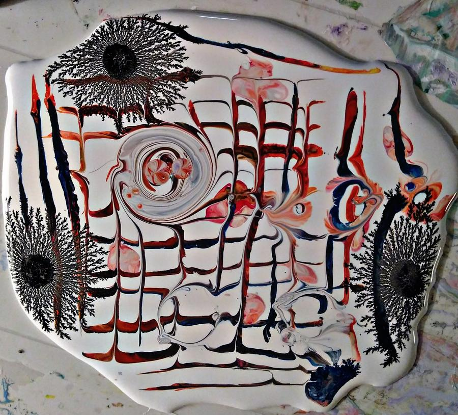

Techniques
Large Colorful Designs
Posted by Daniel Bohnett on December 9, 2019This technique creates a large, colorful design. You will need: Paiwt Medium, 3 different Paiwt Colors, and.....
Read more →
Using Paiwt On Clay
Posted by Daniel Bohnett on July 27, 2019Thank you to Ludmila Bakulina for sharing her technique that uses Paiwt on clay. Watch her tutorials on.....
Read more →
Creating Starfish
Posted by Daniel Bohnett on August 21, 2018Creating Starfish is fun and exciting. I will be using a spoon, two mixing cups, cardboard, scotch tape, Paiwt....
Read more →
Pouring Color Mixture
Posted by Daniel Bohnett on August 21, 2018Pouring a mixture of colors and medium creates new designs. I will be using a cup, cardboard, scotch tape,.....
Read more →
Straight Lines & Checkboards
Posted by Daniel Bohnett on May 18, 2018
This new technique creates straight lines, checkerboards, and new designs. You will need: a plastic card,.....
Read more →
Cutouts
Posted by Daniel Bohnett on May 13, 2018This technique transforms your peel offs into cutout designs. You will need a pair of scissors.....
Read more →
Cup Designs
Posted by Daniel Bohnett on May 12, 2018Using a cup creates new designs. I will be using a cup, cardboard, scotch tape, Paiwt Medium, and......
Read more →
Adding Image Cutouts
Posted by Daniel Bohnett on January 5, 2016Once your Paiwt painting is dry, you can add picture cutouts, great for making collages. For my project,......
Read more →
© Paiwt. All rights reserved.